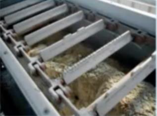
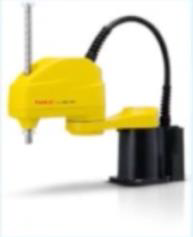

Examen 14/05/2021 - Transporte Parcial 2
1. La siguiente figura representa un clasificador tipo:
Pop-up
Desviador por empuje
Tilt sorter
2. La siguiente imagen se corresponde con un transportador:

Un transportador de cadena de tipo compacto
Un transportador rascador
Un transportador de cadena flotante o en masa
3. Los reductores harmónicos de una sola etapa:
Poseen una relación de reducción igual al cociente entre el número de dientes del circular spline y el flexspline
Permiten una gran reducción sin invertir el sentido de giro
Invierten el sentido de giro
4. El ángulo de sobrecarga:
No depende del material
Influye en la capacidad de carga de una cinta transportadora
Suele ser de 5 a 15º superior al ángulo de talud natural
5. Un elevador de cangilones por cadena:
Está permitido para el transporte de material a gran velocidad
Permite mayores cargas comparado con uno de banda
No requiere de estación tensora
6. ¿Cuál de los siguientes métodos de guiado no se considera como pasivo?
Cinta fluorescente
Guiado inductivo
Cinta metálica
7. El término manutención:
Incluye el transporte de utillaje y producto en curso dentro de la planta de producción
No incluye el transporte de la materia prima en el interior de la planta de producción
Incluye el transporte del producto acabado desde la planta de producción al consumidor final
8. El diseño de medio cónico en una cinta transportadora:
Ninguna es correcta
Conlleva una mayor longitud de transición
Garantiza una mejor estabilidad de la banda
9. Un menor tamaño de material:
Permite menor ancho de banda
Permite mayor capacidad de carga ya que aumenta la sobrecarga
Requiere menor velocidad de transporte
10. Una ventaja fundamental de los descensores helicoidales con respecto a los rectos es que:
El cálculo de la velocidad final es mucho más simple
Permite un mejor aprovechamiento de la superficie del transportador
La velocidad se estabiliza al cabo de un tiempo
11. El dispositivo que evita que una banda se salga de su posición se denomina:
Tope antiexpulsión
Rodillo de transición
Estación autoconcentradora
12. Los métodos más habituales de control del tráfico de un AGV se denominan:
Control zonal, control vehicular y control centralizado
Control zonal, control vehicular y control combinado
Control zonal, control centralizado y control descentralizado
13. Una banda más flexible:
Permite mayores ángulos de sobrecarga, por lo que aumenta la capacidad de carga de la banda
Permite mayores ángulos de artesa, por lo que aumenta la capacidad de carga de la banda
Permite menores ángulos de artesa, por lo que aumenta la velocidad de la banda
14. ¿Cuáles de las siguientes abreviaturas indican tipos de bandas en función de los tejidos utilizados para su construcción?
EP y ST, de poliéster-poliamida y cables de acero
EP y CO, de poliéster-poliamida y algodón
ST y CO, de acero y algodón
15. En un descensor recto, la velocidad final no depende de:
El peso del material
Coeficiente de fricción entre el descensor y el material a transportar
La altura de caída
16. En la circulación en tránsito de un AGV:
Está específicamente indicado para el transporte en rampas en dirección ascendente
Posee una baja velocidad cuando se circula marcha atrás
No puede transitar en rampas debido a su gran maniobrabilidad
17. El método de programación de robots en el que la programación de la trayectoria se realiza moviendo manualmente al manipulador o a un doble de este se denomina:
Guiado pasivo
Guiado gestual
Guiado activo
18. Una ventaja de los transportadores de ruedas respecto a los de rodillos:
Permiten una mayor capacidad de carga
No presentan grandes problemas en caminos curvados
Están indicados para objetos en los que la superficie de apoyo sea muy fiable
19. Generalmente, si un robot tiene pobre repetibilidad:
Indica que el robot está llegando al final de su vida útil
La exactitud no se verá afectada al ser ésta mucho menor que la repetibilidad
Se puede solucionar modificando la programación
20. ¿Qué tipo de configuración geométrica presenta este robot?

SCARA
Cartesiano
Paralelo
21. ¿Cuál de los siguientes transportadores no está diseñado para el transporte de material en bultos?
Un transportador rascador
Un transportador de rodillos motorizados
Un transportador de cadena articulada
22. En transportadores de rodillos Motorizados, ¿Qué método de transmisión de movimiento a los rodillos utilizaría para transportar bultos muy pesados?
Cordón de perfil redondo
Eje lineal de acero
Cadena de rodillo a rodillo
23. ¿Qué tipo de descarga utilizaría en un elevador de cangilones para el transporte de trigo?
Gravedad, ya que no se puede transportar a alta velocidad
Gravedad central, ya que se puede acumular gran cantidad de carga por tolva
Centrífuga, ya que es un material suelto y poco abrasivo
24. El guiado inercial requiere de:
Sensor de giro de la rueda y encoder de posición
Sensor de ángulo de dirección y acelerómetro
Sensor de giro de la rueda y sensor de ángulo de dirección
Enviar
Inicio